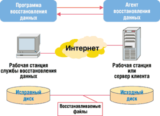
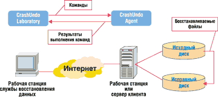
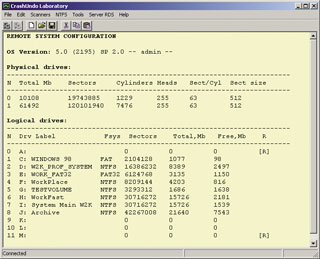
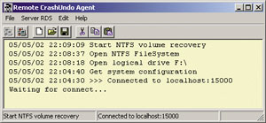
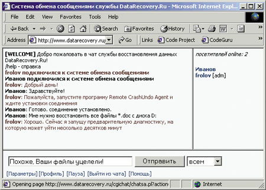

Александр Фролов
alexandre@frolov.pp.ru; http://www.frolov.pp.ru
Доверяя важнейшие данные компьютерам, многие и не подозревают, насколько это опасно. Как с аппаратным и программным обеспечением компьютеров случаются сбои, так и люди - пользователи компьютеров, программисты, системные администраторы - могут допускать ошибки. Все это нередко приводит к потере информации (см. врезку "20 наиболее распространенных причин потери данных").
Хотя большинству пользователей и администраторов известно, что единственное по-настоящему надежное средство против потери данных - резервное копирование файлов, многие легкомысленно пренебрегают этой процедурой или выполняют ее неправильно. Ситуация часто усугубляется отсутствием средств защиты от компьютерных вирусов и атак хакеров либо неэффективным использованием таких средств. В этом случае беда неизбежно произойдет, причем, скорее всего, в самый неподходящий момент.
Но что делать, если важные данные уже пропали?
Прежде всего не следует поддаваться панике. Современные методики восстановления данных во многих случаях позволяют извлечь файлы, даже если диск неисправен или логическая структура файловой системы сильно разрушена. Поэтому, если вам кажется, что данные потеряны окончательно, не торопитесь форматировать или выбрасывать отказавший диск.
20 наиболее распространенных причин потери данныхНиже перечислены причины, по которым чаще всего теряются данные на дисках компьютера. Эти причины расположены в порядке их вероятности. Следует, однако, понимать, что такая сортировка во многом условна - в зависимости от различных обстоятельств вероятность возникновения той или иной ситуации может сильно изменяться.
|
Как восстановить пропавшие данные
В любой файловой системе файлы хранятся на диске блоками, или экстентами. Для файла выделяется один или несколько экстентов; в первом случае файл располагается на диске одним "куском", во втором - будет фрагментирован.
Информация об именах файлов, их размерах, датах создания и изменения, а также о расположении экстентов хранится в служебных областях файловой системы. В случае FAT это каталоги и таблица размещения файлов (File Allocation Table, FAT), а для NTFS - главная таблица файлов (Master File Table, MFT).
При сбое аппаратуры или ПО часть служебной информации может оказаться потерянной. Например, может пропасть содержимое корневого каталога, таблицы с информацией о разделах диска и т. п. В результате операционная система не сумеет смонтировать файловую систему, а пользователи не увидят нужных им дисков и файлов. Ошибочное стирание файлов также приводит к уничтожению или изменению служебной информации, описывающей эти файлы.
В такой ситуации стандартные средства и утилиты ОС Microsoft Windows не смогут оказать никакой существенной помощи. Если разрушения файловой системы обширны или если вышел из строя контроллер диска, стандартная утилита ремонта файловой системы Microsoft CHKDSK может даже усугубить положение. Весьма разрушительными могут оказаться и последствия применения Norton Disk Doctor и других утилит, пытающихся "отремонтировать" файловую систему в автоматическом режиме (см. также врезку "10 самых опасных утилит").
Как же получить доступ к файлам на диске, с которым операционная система отказывается работать? Как правило, восстановление данных выполняется с помощью специализированных утилит, не изменяющих содержимое отказавшего диска. Используя сохранившиеся служебные области файловой системы, эти утилиты могут скопировать файлы на другой диск. Успех восстановления файла во многом определяется тем, сохранилась ли такая служебная информация, как имя файла и расположение его экстентов на диске.
Службы восстановления данных
В немалой степени успех восстановления данных определяется квалификацией специалиста, выполняющего эту работу. Если пропавшие данные имеют большую ценность, а у вас нет соответствующей квалификации, даже и не пробуйте восстанавливать их самостоятельно. В результате неумелых попыток восстановления данные могут пропасть окончательно либо их восстановление станет сложной и дорогостоящей задачей.
10 самых опасных утилитОчень часто данные пропадают из-за неправильного применения утилит, предназначенных для системных или восстановительных работ. Ниже приведен список наиболее опасных утилит, неправильное использование которых может привести к фатальному исходу. Утилита ремонта файловой системы Microsoft CHKDSK часто запускается автоматически. Она пытается "отремонтировать" неисправную файловую систему, но далеко не всегда способна это сделать. Зачастую в результате применения этой утилиты ситуация только ухудшается и может даже стать безнадежной. Утилита ремонта файловой системы Norton Disk Doctor по своей разрушительной способности ничуть не уступает Microsoft CHKDSK. Злые языки даже называют эту утилиту Norton Disk Destroyer - "уничтожителем диска Нортона". Как и большинство средств автоматического восстановления, Norton Disk Doctor способна помочь только в простейших случаях, когда повреждения файловой системы не очень обширны. Если же ситуация тяжелая, то после применения Norton Disk Doctor она может только ухудшиться. Утилита обслуживания дисков Partition Magic упрощает выполнение многих системных работ - таких, как копирование и модифицирование разделов диска, преобразование файловых систем и т. д. В результате неправильного применения этой утилиты, предназначенной только для системных администраторов и опытных пользователей, можно потерять все данные, хранящиеся на диске. Утилита копирования и клонирования дисков Norton GHost при неумелом использовании способна уничтожить раздел с важными данными. Работа с этой утилитой требует высокой квалификации и четкого понимания всех выполняемых действий. Программа администрирования дисков Disk Administrator в Microsoft Windows NT и аналогичные средства Microsoft Windows 2000/XP предназначены для управления разделами диска. При работе с ними можно случайно удалить или отформатировать раздел диска с важными данными. Данные средства предназначены только для системных администраторов или квалифицированных пользователей. Программа FDISK применяется еще со времен MS-DOS для создания и удаления разделов диска. При этом можно случайно удалить или испортить раздел диска, содержащий важную информацию. Заметим, что аналогичная программа запускается и во время установки современных версий ОС Microsoft Windows и Linux, так что будьте осторожны. Утилита FORMAT создает логическую структуру файловой системы на диске, а заодно уничтожает все расположенные на нем данные. Пользователи часто форматируют с ее помощью совсем не тот диск, который хотели: например, вместо дискеты по неосторожности форматируется жесткий диск. Заметим, что столь же опасные средства форматирования доступны из графической оболочки Microsoft Windows. Двоичные редакторы диска, такие как Microsoft Disk Probe, Norton Disk Editor, Hex Workshop и другие аналогичные средства могут быть чрезвычайно опасны в неумелых руках. Эти редакторы позволяют изменять внутренние структуры файловых систем, критичных для целостности данных. Используйте эти редакторы только в том случае, если вы свободно владеете низкоуровневыми структурами данных диска и точно знаете, что собираетесь сделать. Утилита Microsoft FT Editor предназначена для создания защищенных от сбоев наборов данных в среде Microsoft Windows NT. Неправильное применение этой утилиты может послужить причиной потери данных, хранящихся в наборах типа Volume Set, Stripe Set и некоторых других. Утилиты Microsoft REGEDIT и Microsoft REGEDT32 предназначены для редактирования содержимого регистрационной базы данных Microsoft Windows. Их неумелое использование может привести к потере работоспособности ОС или приложений и даже к еще худшим последствиям, например, к потере данных. |
В России есть несколько компаний и служб (главным образом в Москве и Петербурге), оказывающих услуги восстановления данных. Их легко найти в Интернете (например, по ключевым словам "восстановление данных").
Обращаясь в такую компанию или службу, нужно помнить, что, как бы ни была высока квалификация персонала, бывают ситуации, когда может помочь только волшебная палочка. Никто, например, не возьмется восстанавливать файлы, если распределенное для них дисковое пространство было перезаписано другими данными.
Сотрудники службы восстановления данных прежде всего должны провести предварительную диагностику диска. Эта операция обычно стоит недорого и не отнимает много времени. Даже лучший эксперт не сможет гарантировать какую-то вероятность успеха восстановления, основываясь только на описании аварийной ситуации по телефону или электронной почте.
Диагностика обычно сводится к оценке работоспособности электронных схем диска и к сканированию диска специальными утилитами на предмет поиска сохранившихся служебных областей файловой системы. Для диагностики неисправный диск обычно привозят в службу восстановления данных либо вызывают специалиста службы в компанию.
Удаленная диагностика и восстановление
Если вы не проживаете ни в одной из двух столиц, воспользоваться услугами компаний, восстанавливающих данные, может оказаться совсем не просто. А общаясь со службой восстановления данных по телефону или через Интернет, не всегда легко решить, целесообразна ли поездка в другой город. Конечно, можно отправить диск для диагностики по почте, однако велика вероятность того, что его повредят по дороге.
К счастью, существуют службы удаленного восстановления данных (Remote Datarecovery Service, RDS), способные выполнить удаленную диагностику, а во многих случаях и удаленное восстановление данных через Интернет. Некоторые из таких служб применяют утилиты восстановления, предназначенные для работы в локальной сети, например, Winternals Administrators Pak (http://www.winternals.com), или аналогичные.
Для удаленного восстановления данных необходимо подключить к Интернету два компьютера - рабочую станцию (либо сервер) клиента и рабочую станцию службы RDS. К первому из них подключается диск, информацию с которого необходимо восстановить, а ко второму - диск для записи восстановленных файлов (рис. 1).
|  | Рис. 1. Типичная схема удаленного восстановления данных.
|
На рабочей станции клиента запускается специальная программа, выступающая в роли агента восстановления, а на рабочей станции службы RDS - управляющая программа. Взаимодействуя с агентом восстановления по локальной сети или через Интернет, управляющая программа под руководством специалиста проводит дистанционное сканирование и восстановление информации.
У приведенной выше схемы удаленного восстановления есть много недостатков. Прежде всего восстанавливаемые файлы передаются по сети от клиента в службу RDS. Если нужно восстановить гигабайты или десятки гигабайт данных, то для передачи файлов потребуется скоростная выделенная линия. К тому же потом восстановленные файлы нужно переправить обратно клиенту.
Если восстанавливаются конфиденциальные данные, следует использовать утилиты удаленного восстановления со встроенными средствами шифрования. Но и в этом случае полная безопасность данных не гарантируется - как известно, практически любой шифр можно вскрыть. Вопрос только в том, сколько у злоумышленника уйдет на это времени.
Другая проблема связана с необходимостью выделения клиентскому компьютеру фиксированного IP-адреса. Если компьютер подключен к Интернету через модем, то, скорее всего, у него динамический IP-адрес, изменяющийся от одного сеанса подключения к другому. Перед началом работ клиент должен узнать текущий IP-адрес клиентского компьютера и сообщить его в службу RDS. В случае разрыва связи, весьма вероятного на модемной линии, процедуру определения IP-адреса и передачи его в службу RDS придется повторить. Все это не очень удобно и сильно замедляет восстановительные работы.
Если в результате разрушения файловой системы компьютер клиента перестал загружаться, то можно создать специальную системную дискету и записать на нее программу агента удаленного восстановления. Обычно этот вариант годится только для подключения к Интернету по выделенной линии; при этом на дискету придется скопировать еще и драйвер сетевого адаптера, установленного в компьютере клиента.
К сожалению, вариант с дискетой чаще всего предполагает использование операционной системы MS-DOS, которая не слишком хорошо работает с дисками большого объема и RAID-массивами. Чтобы агент восстановления увидел диск IDE большого объема, клиенту, возможно, придется обновить BIOS в системной плате компьютера. Для работы с дисками SCSI и RAID-массивами необходимо записать на загрузочную дискету соответствующий дисковый драйвер.
Как видите, для использования таких средств удаленного восстановления, как Winternals Administrators Pak, на стороне клиента должен быть довольно квалифицированный системный администратор.
Технология службы DataRecovery.Ru
При разработке технологии удаленного восстановления данных Remote CrashUndo для службы DataRecovery.Ru (http://www.datarecovery.ru) была поставлена цель максимально упростить все процедуры, проводимые на стороне клиента. Было принято решение исключить передачу файлов через Интернет, а также избавить клиентов от определения текущего IP-адреса своего компьютера.
Структура комплекса удаленного восстановления данных, применяемого в рамках данной технологии, показана на рис. 2.
|  | Рис. 2. Удаленное восстановление в службе DataRecovery.Ru.
|
Комплекс состоит из управляющей программы CrashUndo Laboratory и агента восстановления данных CrashUndo Agent. Первая запускается сотрудником службы DataRecovery.Ru на своей рабочей станции, а вторая - клиентом на компьютере, к которому подключен восстанавливаемый диск.
Сразу после запуска программа CrashUndo Agent, установив соединение по протоколу TCP/IP с CrashUndo Laboratory, автоматически переходит в режим ожидания команд. При этом агент восстановления использует заранее известный фиксированный IP-адрес рабочей станции службы восстановления данных.
Сотрудник службы DataRecovery.Ru при помощи управляющей программы выдает команды агенту восстановления. Это команды определения текущей конфигурации удаленного компьютера, сканирования разделов диска, просмотра содержимого секторов диска, поиска, копирования восстанавливаемых файлов и т. д.
Объем информации, передаваемой через Интернет, невелик, поэтому для выполнения работ подходит выделенный канал с любой скоростью передачи данных или даже модемная линия. Что же касается восстанавливаемых файлов, то они не передаются через Интернет, а сразу записываются на любой исправный диск (локальный или сетевой), подключенный к удаленной системе клиента.
На рис. 3 показан пример отчета о конфигурации компьютера клиента в окне программы CrashUndo Laboratory, полученного удаленно через Интернет. Как видно, в отчете отображается версия операционной системы, права удаленного пользователя, а также списки физических и логических дисковых устройств с их наиболее важными характеристиками. Отчет можно сохранить в файле или распечатать для дальнейшей работы.
|  | Рис. 3. Просмотр конфигурации удаленной системы.
|
Определив конфигурацию системы клиента, сотрудник службы восстановления может открыть нужный физический или логический диск. Далее он запускает один из сканеров, с помощью которого выполняются диагностические и восстановительные работы. По результатам этих работ нетрудно сделать заключение о том, возможно ли восстановление данных и следует ли проводить эту операцию в лабораторных условиях.
Сканер раздела NTFS, к примеру, получает список всех сохранившихся файлов и может восстановить эти файлы на другой диск, подключенный к системе клиента. Элементы управления, расположенные в окне сканера, позволяют задавать различные режимы работы, вид и расположение файла журнала, а также периодичность опроса текущего состояния процесса сканирования. Можно выбрать режим восстановления стертых файлов, а также режим восстановления Raw mode, необходимый при значительных повреждениях таблицы MFT.
Ниже приведен пример журнала с перечнем имен файлов и каталогов, создаваемого в процессе сканирования на локальном диске клиента.
1743: 3518: OK: 05.19.1999 21:15: NTFSCrashUndo.exe: 1228 1744: 3520: DIR: 05.19.1999 21:15: DiskSectorCopy 1745: 3522: OK: 05.19.1999 21:15: crushundo.ico: 1398 1747: 3526: OK: 05.19.1999 21:15: diskio.c: 9397 1748: 3528: OK: 05.19.1999 21:15: diskio.h: 820 1750: 3532: OK: 05.19.1999 21:15: dscopy.c: 8591 1751: 3534: DIR: 07.29.2000 17:54: Дизайн сайтов 1752: 3536: OK: 07.14.2000 13:02: dscopy.ncb: 41984 1753: 3538: OK: 05.19.1999 21:15: dscopy.exe: 38400 1754: 3540: OK: 05.19.1999 21:15: dscopy.h: 945 1755: 3542: DIR: 07.14.2000 13:02: Release 1756: 3544: OK: 07.14.2000 13:02: dscopy.dsw: 537 1759: 3550: OK: 05.19.1999 21:15: dscopy.zip: 45396 1760: 3552: OK: 05.19.1999 21:15: error.c: 741 1761: 3554: OK: 05.19.1999 21:15: error.h: 93 1762: 3556: OK: 05.19.1999 21:15: fixedsm.ico: 318 1763: 3558: OK: 05.19.1999 21:15: physDriveCopy.c: 9434 1764: 3560: OK: 05.19.1999 21:15: removablesm.ico: 318 1765: 3562: OK: 05.19.1999 21:15: resource.h: 1507 |
Таким образом, при использовании технологии Remote CrashUndo даже список имен восстанавливаемых файлов не требуется передавать через Интернет. Клиент может просмотреть его локально, оценив возможность восстановления информации и полноту восстановления.
Сотрудник службы восстановления может дистанционно следить за ходом сканирования благодаря тому, что управляющая программа опрашивает состояние агента восстановления с заданным интервалом времени. Объем информации о состоянии невелик, и потому она быстро передается даже по модемным каналам связи.
Если клиент доволен результатами сканирования, сотрудник службы может запустить восстановление файлов на локальный диск, подключенный к клиентскому компьютеру. Что же касается пользователя удаленного компьютера, то он может следить за ходом восстановления по сообщениям, появляющимся в окне агента CrashUndo Agent (рис. 4).
|  | Рис. 4. Сообщения в окне агента восстановления
|
Фактически задача клиента предельно упрощена. Все, что ему нужно сделать для инициирования процесса, - это подключить диск, информацию с которого нужно восстановить, к любому компьютеру, имеющему соединение с Интернетом. Далее нужно загрузить агент восстановления и запустить его. Все остальное сделают сотрудники службы восстановления.
После восстановления данных сотрудники службы DataRecovery.Ru обычно дают заключение, по каким причинам они пропали и что нужно сделать, чтобы подобное не повторилось вновь.
Общение с клиентом
Первоначальное обращение клиента в службу RDS и общение с его сотрудниками происходит, как правило, посредством электронной почты. Однако в процессе проведения восстановительных работ потребуется более тесное общение, желательно в режиме реального времени. Сотрудник службы RDS может таким образом оказать помощь клиенту в установке и запуске агента восстановления, получить дополнительную информацию о том, какие файлы нужно восстановить и на какой диск их следует записать, сообщать клиенту ход процесса диагностики и ее результаты.
В качестве средства общения можно было бы использовать программу ICQ или аналогичное средство компании Microsoft, но эти программы имеются не у всех клиентов. Поэтому в службе DataRecovery.Ru было принято решение использовать для общения с клиентами в реальном времени специальный приватный чат. В нем могут беседовать все люди, имеющие отношение к текущему процессу восстановления (рис. 5).
|  | Рис. 5. Общение в чате.
|
Чат доступен через обычный браузер, встроенный в Microsoft Windows. Пользовательский интерфейс чата очень прост, и на сайте службы имеется подробная документация по его использованию.